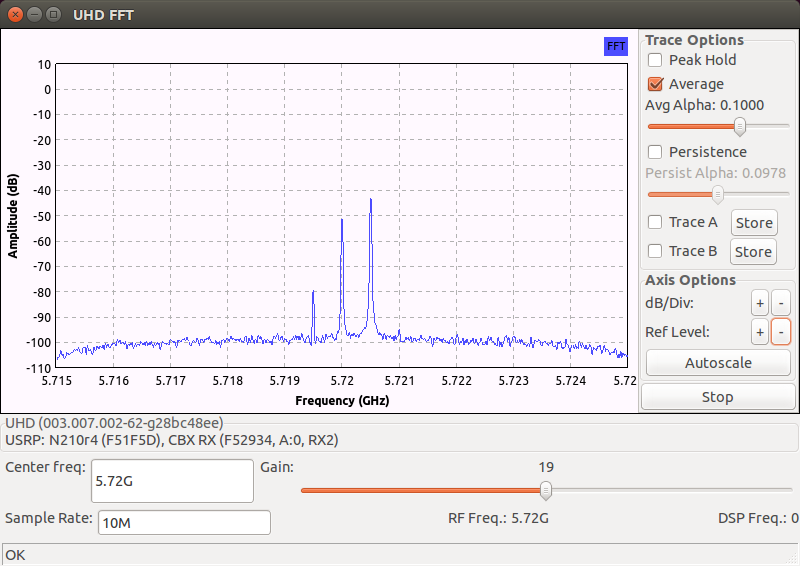
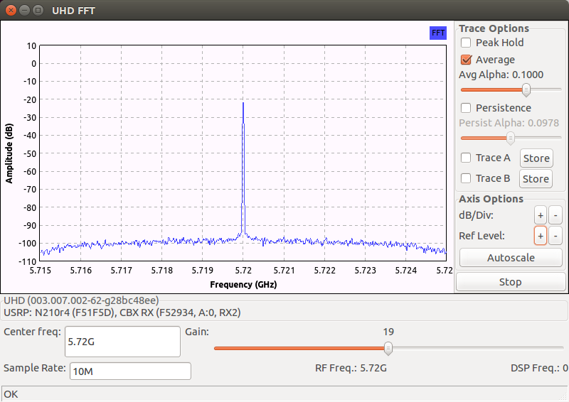
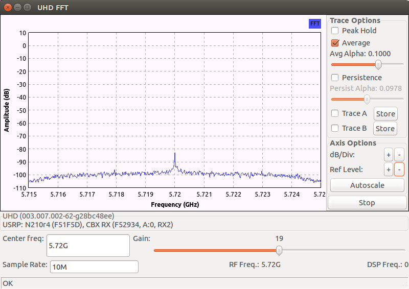
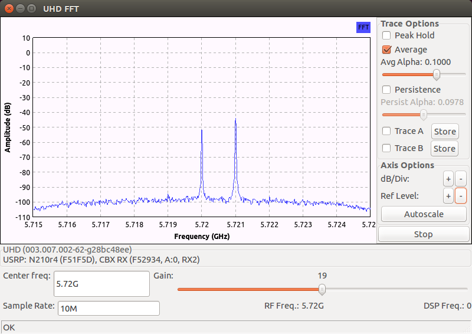
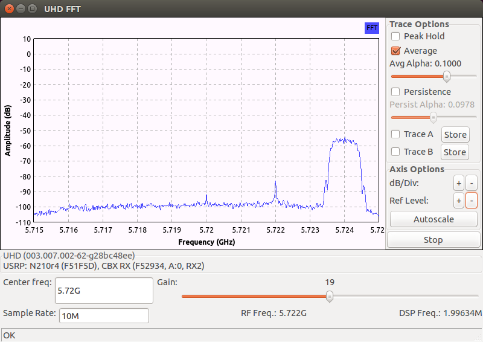

5.2. DC Offset and IQ Imbalance#
5.2.1. TX model#
Consider the TX chain shown in the N210 architecture before. The mixers in the I and Q chains are not perfectly balanced, and thus may apply different gains to the mixed signals. In addition, the phase shifter may not perfectly provide a \(90^\circ\) phase shift, and thus the I and Q carriers generated may not be exactly \(90^\circ\) out of phase. The combination of the gain and phase imbalance between the I and Q paths is commonly referred to as IQ imbalance. More generally, the two lowpass filters in the I and Q paths may not be perfectly matched either. Thus, IQ imbalance may also be frequency selective.
The isolation between the VCO and the TX amplifier may not be perfect in that the (hopefully weakened) VCO signal may leak directly to the amplifier input. This adds an unintended carrier component to the TX signal. In the complex baseband, this added carrier component becomes a DC offset. In addition, the filters and other circuitry in the I and Q paths may produce DC biases. These DC biases will also contribute to the DC offset.
Assume for simplicity that the DC offset and IQ imbalance are time-invariant and frequency non-selective and that the TX amplifier is perfectly linear. Then the following model can be used to describe the above circuit defects:
(5.1)#\[\begin{equation} x_{BP}(t) = \alpha_I m_I(t) \cos \left(2\pi f_c t + \frac{\phi}{2} \right) - \alpha_Q m_Q(t) \sin \left(2\pi f_c t -\frac{\phi}{2} \right) + \alpha_{dc} \cos(2\pi f_c t + \theta) \end{equation}\]where \(x_{BP}(t)\) is the real-valued bandpass signal at the TX amplifier output, \(m_I(t)\) and \(m_Q(t)\) are the I and Q message signals at the DAC outputs, \(\alpha_I\) and \(\alpha_Q\) are the gains over the I and Q paths, \(\phi\) models the deviation of the phase shifter from \(90^\circ\), and \(\alpha_{dc}\) and \(\theta\) together model the amplitude and phase of the added carrier component due to DC offset. In the complex baseband notation, (5.1) becomes
(5.2)#\[\begin{equation} x(t) = %\left\{ \frac{1}{2} \left(\alpha_I e^{j\frac{\phi}{2}} + \alpha_Q e^{-j \frac{\phi}{2} } \right) m(t) + \frac{1}{2} \left(\alpha_I e^{j\frac{\phi}{2}} - \alpha_Q e^{-j \frac{\phi}{2} } \right) m^*(t) + \alpha_{dc} e^{j\theta} %\right\} e^{j 2\pi f_c t} \end{equation}\]where \(m(t) = m_I(t) + j m_Q (t)\) and \(x(t)\) are the complex envelops of the message and TX signals, respectively.
Practically, the value of \(\phi\) should be no larger than a few degrees, and \(\alpha_I\) and \(\alpha_Q\) should differ by only a few percentages.
5.2.2. RX model#
The same circuit mismatches and biases also occur in the I and Q paths of the RX chain. The VCO leakage on the RX side is to the input of the LNA. The effect still results in a DC offset in the complex baseband demodulated signal. Again, assume that the DC offset and IQ imbalance are time-invariant and frequency non-selective and that the RX amplifiers aree perfectly linear. Then the following model can be used to describe the RX circuit defects in the complex baseband:
(5.3)#\[\begin{equation} \hat m(t) = \frac{1}{2} \left(\beta_I e^{j\frac{\psi}{2}} + \beta_Q e^{-j \frac{\psi}{2} } \right) %\left( y(t) %e^{-j 2\pi f_c t} \right) +\frac{1}{2} \left(\beta_I e^{j\frac{\psi}{2}} - \beta_Q e^{-j \frac{\psi}{2} } \right) %\left( y^*(t) %^e^{-j 2\pi f_c t} \right)^* + \beta_{dc} e^{j \zeta} \end{equation}\]where \(\hat m(t)\) and \(y(t)\) are the complex envelops of the demodulated baseband message and RX signals, respectively.
As before, the value of \(\psi\) is no larger than a few degrees, and \(\beta_I\) and \(\beta_Q\) differ by at most a few percentages.
5.2.3. Effects on single-tone transmission#
Comparing (5.2) and (5.3) shows that the models for DC offset and IQ imbalance at the TX and RX are essentially the same. Hence, it suffices to consider say the RX model.
Assume that the complex baseband RX signal \(y(t)\) is a single tone \(e^{j 2\pi f_0 t}\) at frequency \(f_0\). Substituting into (5.3) gives us
(5.4)#\[\begin{equation} \hat m(t) = \frac{1}{2} \left(\beta_I e^{j\frac{\psi}{2}} + \beta_Q e^{-j \frac{\psi}{2} } \right) e^{j 2\pi f_0 t} + \frac{1}{2} \left(\beta_I e^{j\frac{\psi}{2}} - \beta_Q e^{-j \frac{\psi}{2} } \right) e^{-j 2\pi f_0 t} + \beta_{dc} e^{j \zeta}. \end{equation}\]Clearly from (5.4), the IQ imbalance creates a spurious tone (also called an image) at frequency \(-f_0\) while the DC offset adds the unintended carrier component at frequency \(0\).
It is not hard to work out that the ratio of the power of the spurious tone at \(-f_0\) to that of the desired tone at \(f_0\) is given by
\[\begin{equation*} \frac{P_{\text{spurious}}}{P_{\text{desired}}} = \frac{\gamma_{RX}^2 + 1 - 2 \cos \psi}{\gamma_{RX}^2 + 1 + 2 \cos \psi} \approx \frac{(\gamma_{RX} -1)^2 + \psi^2}{4} \end{equation*}\]where \(\gamma_{RX} \triangleq \frac{\beta_I}{\beta_Q}\) and the approximation is accurate when \(\gamma_{RX}\) is close to 1 and \(\psi\) (in radians) is small. The power ratio is often called the image rejection (suppression) ratio (IRR).
The captured spectrum below shows the effects of DC offset (some correction has been applied, see below) and IQ imbalance when a single tone at frequency \(5.7205\) GHz is transmitted and \(f_c\) is set to \(5.72\) GHz:
Observe that the IRR is about \(-37\) dB.
{kind=link}
5.2.4. Correction#
If the parameters associated with DC offset and IQ imbalance are time-invariant and can be estimated, then it is straightforward to correct for the detriments caused by them.
Consider the RX side first. We may apply the follow correction steps on \(\hat m(t)\) to compensate for DC offset and IQ imbalance:
Remove DC offset: \(\tilde m(t) = \hat m(t) - \beta_{dc} e^{j\zeta}\).
Remove IQ imbalance: Output \(\tilde m(t) + c_{RX} \tilde m^*(t)\), where \(c_{RX} = \frac{1- \gamma_{RX} e^{j\psi}}{1+\gamma_{RX} e^{-j\psi}} e^{-j \psi}\).
Simple algebra shows that
\[\begin{equation*} \tilde m(t) + c_{RX} \tilde m^*(t) = \frac{2\beta_I \beta_Q \cos\psi}{\beta_I e^{-j\psi/2} + \beta_Q e^{j\psi/2}} \cdot y(t). \end{equation*}\]Hence, the detrimental effects due to DC offset and IQ imbalance at the RX are all removed.
We may use the class methods
uhd::usrp::multi_usrp::set_rx_dc_offset()anduhd::usrp::multi_usrp::set_rx_iq_balance()to implement steps 1. and 2. above, respectively. The DC offset \(\beta_{dc} e^{j\zeta}\) and IQ correction factor \(c_{RX}\) should be provided to the respective methods as input arguments. The correction is of course applied to the output samples of the ADCs (sampled version of \(\hat m(t)\)) in the FPGA on the USRP motherboard.Note
UHD also provides overload methods to
uhd::usrp::multi_usrp::set_rx_dc_offset()anduhd::usrp::multi_usrp::set_rx_iq_balance()for automatic DC offset and IQ imbalance correction on the RX side. The parameters needed for correction are estimated on-the-fly (see the discussion below). The overload methods may be invoked by passing atrueas the first input argument to the methods. The default setting is to perform automatic correction for DC offset. See the UHD manual for details.Similarly, the effects of TX DC offset and IQ imbalance can be compensated by pre-correcting the message signal \(m(t)\) according to following steps below:
Pre-correct IQ imbalance: Obtain \(m(t) + c_{TX} m^*(t)\), where \(c_{TX} = \frac{1- \gamma_{TX} e^{j\phi}}{1+\gamma_{TX} e^{j\phi}}\) and \(\gamma_{TX} \triangleq \frac{\alpha_I}{\alpha_Q}\).
Pre-correct DC offset: Use \(\bar m(t) = m(t) + c_{TX} m^*(t) - \left[ \frac{\alpha_{dc}}{\alpha_I} \cos\left(\theta + \frac{\phi}{2} \right) + j \frac{\alpha_{dc}}{\alpha_Q} \sin\left(\theta - \frac{\phi}{2} \right) \right]\) to replace \(m(t)\) in (5.2) as input to the mixers.
Again, simple algebra shows that the resulting complex baseband transmit signal becomes
\[\begin{equation*} x(t) = \frac{2\alpha_I \alpha_Q \cos\phi}{\alpha_I e^{-j\phi/2} + \alpha_Q e^{j\phi/2}} \cdot m(t) %e^{j 2\pi f_c t}$ \end{equation*}\]when \(\bar m(t)\) is applied to the TX mixers instead of \(m(t)\) as in step 2. above. Thus, the detrimental effects due to DC offset and IQ imbalance at the TX are all removed.
We may similarly use the class methods
uhd::usrp::multi_usrp::set_tx_iq_balance()anduhd::usrp::multi_usrp::set_tx_dc_offset()to implement steps 1 and 2 above, respectively. The correction is of course applied to the input samples of the DACs (sampled version of \(m(t)\)) in the FPGA on the USRP motherboard.
5.2.5. Parameter estimation and UHD implementation#
From the discussion above, we conclude:
To implement RX DC offset and IQ balance correction, we need to estimate the parameters \(\gamma_{RX}\), \(\psi\), and \(\beta_{dc} e^{j \zeta}\).
To implement TX DC offset and IQ balance correction, we need to estimate the parameters \(\alpha_I\), \(\alpha_Q\), \(\phi\), and \(\alpha_{dc} e^{j \theta}\).
Some of these parameters can be easily estimated while some others may not be so. For example, \(\beta_{dc} e^{j \zeta}\) can be estimated directly by averaging the ADC outputs during idle transmission periods, or with the RX antenna input port properly terminated. On the other hand, accurate estimation of \(\alpha_I\) and \(\alpha_Q\) for example may require more involved algorithms as well as external RF measurement equipment.
Instead of directly estimating the parameters, a more practical approach is to estimate the optimal values to use for the TX and RX IQ balancing correction factors \(c_{TX}\) and \(c_{RX}\) and the TX and RX DC offset correction factors \(\frac{\alpha_{dc}}{\alpha_I} \cos\left(\theta + \frac{\phi}{2} \right) + j \frac{\alpha_{dc}}{\alpha_Q} \sin\left(\theta - \frac{\phi}{2} \right)\) and \(\beta_{dc} e^{j \zeta}\) so that the effects of DC offset and IQ imbalance are minimized.
This can be done by sending for example a single tone at an offset frequency \(f_0\) with respect to the carrier frequency \(f_c\) as in (5.4) above. One may then determine the severity of IQ imbalance and DC offset by measuring the IRR and the power ratio of the leakage RX power at \(f_c\) to the offset tone’s power, respectively. Then, the correction factors are adaptively tuned until the measured IRR and relatively leakage power ratio attain their respective minima. See [2] for a more detailed description of such an adaptive approach.
If the parameters vary only slightly over a long period of time (that is the case for the SBX/CBX frontends), one may pre-calibrate the optimal values of correction factors at different carrier frequencies, and use these pre-calibrated values to perform correction each time the transceiver is used. This is the approach adopted by UHD:
For RX DC offset, the FPGA calculates a long-term average of the DAC outputs as an estimate of \(\beta_{dc} e^{j \zeta}\) (based on the assumption that transmission is mostly idle over a long term or that the RX DC offset dominates over the level of most RX signals). Then it automatically removes the DC offset from the RX samples. This automatic RX DC offset correction process can be turned off by passing the
boolvaluefalseas the first input argument to the class methoduhd::usrp::multi_usrp::set_rx_dc_offset(). A comparison between with and without this automatic RX DC offset correction implementation is shown by the two captured spectrums below:Automatic RX DC offset correction OFF
Automatic RX DC offset correction ON
Both spectrums are captured when the channel is idle. The RX LO frequency is set to \(5.72\) GHz. From the first spectrum (when RX DC offset correction is OFF), we can see that the RX DC offset at this frequency is very severe. Fron the second spectrum (when RX DC offset correction is ON), the correction process successfully removes the majority of the DC offset but nonetheless still leaves a leaked carrier component significantly above the noise floor. Hence if the RX signal is weak, we may still need to do low-IF tuning to avoid the remaining leaked carrier component.
For TX DC offset and IQ imbalance correction at the TX and RX, the pre-calibration approach with the transmission of an offset tone mentioned above is employed. For the SBX/CBX daughterboard, UHD provides a CAL “antenna port” in addition to the TX/RX and RX2 antenna ports that are used in normal operations. When the TX antenna is selected to be CAL, the TX chain output will be switched to an unused port. With any external connections to the RF ports removed, the RX chain picks up mostly the offset tone leaked from the TX chain’s transmission. The pre-calibration process to obtain the correction parameters can be invoked by running the following three programs:
uhd_cal_rx_iq_balance,uhd_cal_tx_dc_offset, anduhd_cal_tx_iq_balance.
The optimal correction factors are obtained by a straightforward search over each carrier frequency step over the frequency range supported by the daughterboard. The pre-calibration results are stored in the directory
~/.uhd/cal/. Corrections are made automatically by UHD each time the TX and RX frequency is set by the class methodsuhd::usrp::multi_usrp::set_tx_freq()anduhd::usrp::multi_usrp::set_rx_freq(). For more details about the implementation of this pre-calibration process, refer to the source codes of the calibration programs above.The captured spectrums below show the improvements obtained after applying all three corrections to the single-tone image example considered above and to the low-IF tuning image example considered in the previous section:
Offset single-tone image with corrections
Low-IF tuning with corrections
We observe that the images are now below the noise floor in both examples. The IQ imbalance problem is much alleviated with the corrections making the IRR in the single-tone example at least \(-50\) dB and the low-IF image suppressed by at least 45 dB. However, the continuous transmission of the offset tone appears to have skewed the long-term averaging correction of the RC DC offset.
{kind=link}
{kind=link}
{kind=link}
{kind=link}